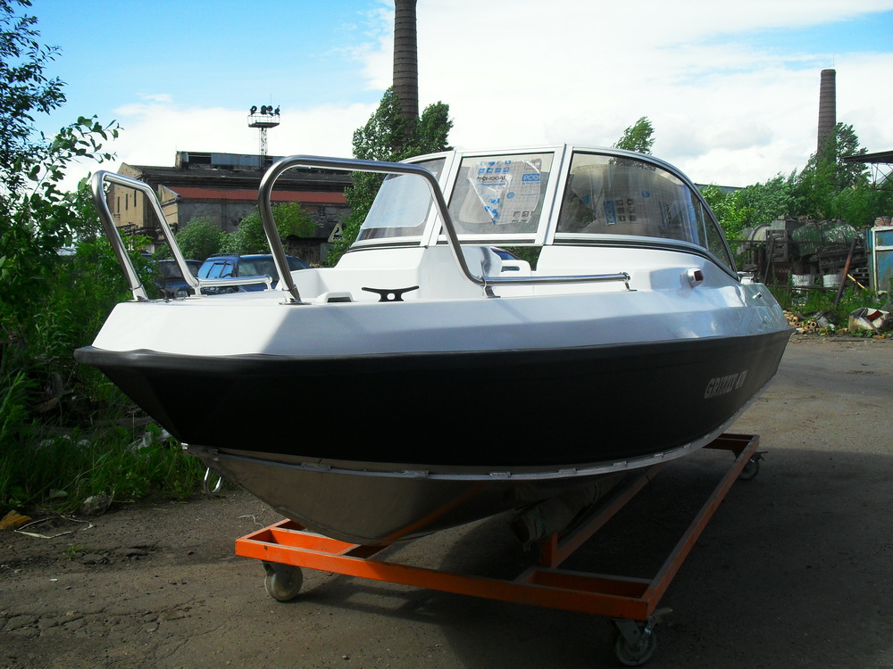

Алюминиевый катер GRIZZLY 470 DC (Гризли 470 DC)
 Прайс-лист (цены) на катер и доп. оборудование
Прайс-лист (цены) на катер и доп. оборудование
Модель Grizzly 470 DC (Гризли 470 DC) представляет собой многофункциональный катер длиной 4,70 метра. Особенностью модели является то, что консоли расположены в средней части катера. Благодаря этому внутренне пространство разделено на две зоны: носовой кокпит и кормовой кокпит. Это разделение особенно ценят рыбаки, которые отмечают, что возможность одновременно ловить, как с передней, так и с задней части катера очень удобна, а порой и необходима. Один из главных плюсов модели – материал, который компания Grizzly использует для изготовления корпуса.
Нижняя часть до привального бруса выполнена из морского алюминиевого сплава AMГ 5м. Верхняя и внутренняя часть корпуса создана из пластика. Благодаря этому катер надёжен, прочен, неприхотлив в эксплуатации и прост в обслуживании. Допустимая мощность двигателя до 60 л.с. Объем бака - 60 литров, что позволяет комфортно преодолеть более 250 км. Модель Grizzly 470 выполнена компанией ещё в одном варианте, где консоль расположена сзади.
Отличительные свойства катера
Модель Grizzly 470 DC (Гризли 470 DC) уникальна своей универсальностью. Стремительный, маневренный и неприхотливый в эксплуатации катер идеально подходит для профессиональных занятий охотой и рыбалкой. Стильный, безопасный, вместительный, комфортный и быстрый Grizzly 470 DC (Гризли 470 DC) может использоваться для катания на водных лыжах, приятного отдыха и прогулок по воде. Несмотря на то, что в первую очередь катер Grizzly 470 DC (Гризли 470 DC) предназначен для профессиональных занятий рыбалкой и охотой, его дизайну было уделено особое внимание. Элегантный внешний вид и стильная внутренняя отделка делают модель хорошим вариантом даже для тех, кто придаёт внешнему облику катера первостепенное значение. Немалую роль в отделке модели играют высококачественные материалы от ведущих мировых производителей из Испании, Италии и Америки. Набор катера сделан из продольного и поперечных реданов с большим запасом прочности.
Технические характеристики катера:
| Параметр | Grizzly 470 DC |
|
Длина |
4.70 м |
|
Максимальная ширина |
1.85 м |
|
Высота надводного борта |
0.8 м |
|
Килеватость |
15º |
|
Высота транца |
510 мм |
|
Масса |
330 кг |
|
Корпус |
сварной |
|
Толщина днища |
4 мм |
|
Толщина борта (зигованный) |
3 мм |
|
Рекоменд. мощность двигателя |
40-60 л/с |
|
Материал корпуса |
алюминиево-магниевого сплав АМГ-5М |
|
Кол-во пассажиров |
5 человек |
Технология - гарантия качества
Катер Grizzly 470 DC (Гризли 470 DC) был создан на заводе компании. Инновационное оборудование, высококачественные материалы и опытные профессионалы - неотъемлемые составляющие успеха в производстве катеров, считает компания Grizzly. Например, раскрой металла выполняется только на высокочастотном станке чпу плазменной резки французской фирмы Vulkan, лидера данной области станкостроения. Пластик производится путём вакуумного формования корпуса, что может себе позволить всего несколько крупнейших компаний в мире. Внутренне заполнение бортов пенополиоританом под высоким давлением 0,75 кубических метров обеспечивает катеру положительную плавучесть даже при максимальной нагрузке. В основу катера легла классическая лодка Buster L финского производства, с улучшенными ходовыми качествами и доработками в дизайне. Катер Grizzly 470 DC (Гризли 470 DC) создан специально для профессионалов, именно поэтому компания Grizzly предлагает рыбакам и охотникам полный спектр необходимого оборудования. На модель Grizzly 470 DC (Гризли 470 DC) для особо взыскательных профессионалов возможно изменение цвета пластика корпуса: камуфляж и морские цвета.
{kind=link}
{kind=link}
{kind=link}
{kind=link}
{kind=link}
{kind=link}
{kind=link}